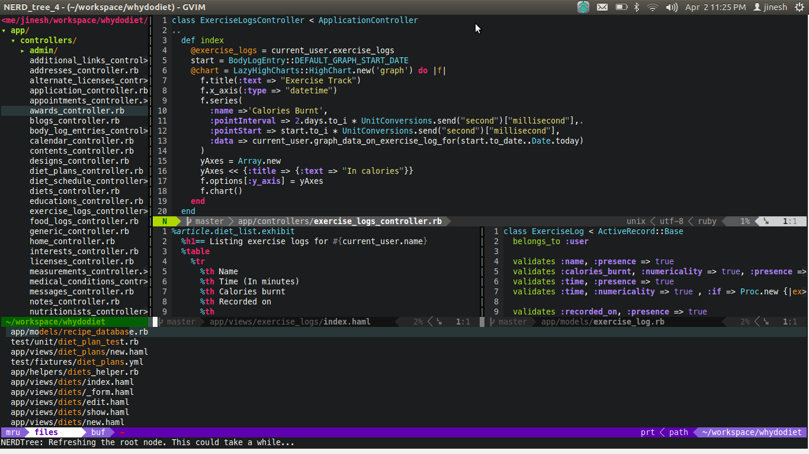

Vim คืออะไร
Vim
Vim เป็น editor ที่ใช้สำหรับแก้ไขไฟล์หรือซอร์สโค้ดโปรแกรม ต้นกำเนิดจริง ๆ ของ vim มาจาก vi แต่ถูกปรับแต่งมาเรื่อย ๆ จนในปัจจุบันมีความสามารถมากขึ้นและเป็นประโยชน์ โดย vim สามารถทำงานได้บนระบบปฏิบัติการหลายระบบโดยเฉพาะ Unix และ Linux ซึ่งจะมี vi(m) ติดตั้งมาอยู่แล้วพร้อมใช้งาน
หลักการทำงานของ vim
การทำงานของ vim นั้นค่อนข้างจะแตกต่างจาก editor ทั่วไปอย่างเห็นได้ชัด สำหรับ editor ปกติจะมีโหมดการใช้งานเพียงโหมดเดียวคือการพิมพ์คือการเขียนอักขระลงไปบนไฟล์ทันที แต่สำหรับ vim นั้นใช้ระบบที่เรียกว่าโหมดการทำงานที่แตกต่างกัน ยกตัวอย่างเช่น โหมด normal, โหมด visual, โหมด insert, โหมด command-line เป็นต้น
Vim สามารถถูกปรับแต่งให้เป็นไปตามที่คุณต้องการได้
Vim สามารถถูกปรับแต่ง (configuration) ได้ค่อนข้างอิสระ ตั้งแต่การเพิ่มเลขบรรทัดไปจนถึงการติดตั้งปลั๊กอินเสริมที่มีคนพัฒนาและแจกจ่ายให้ ทำให้เราสามารถออกแบบ vim ให้เป็นเครื่องมือในการทำแก้ไขข้อความให้ตรงตามความต้องการมากที่สุด ดูไปดูมาก็เหมือน IDE ราคาแพงตัวหนึ่งเลยทีเดียว
แปลงร่าง vi(m) ให้น่าใช้งาน
Graphical Vim
ด้วยการปรับแต่งหน้าตาของ GVim
GVim หรือ Graphical Vim ถูกพัฒนามาจาก vim เพื่อให้สามารถปรับแต่งใส่ plugins ต่าง ๆ ได้และถูกออกแบบให้มี graphic user interface (GUI mode) เป็นผลให้คุณสามารถปรับแต่งให้ vim ของคุณนั้นมีความสวยงามและทำงานตอบสนองคุณได้ดีเหมือน IDE แพง ๆ ตัวหนึ่ง